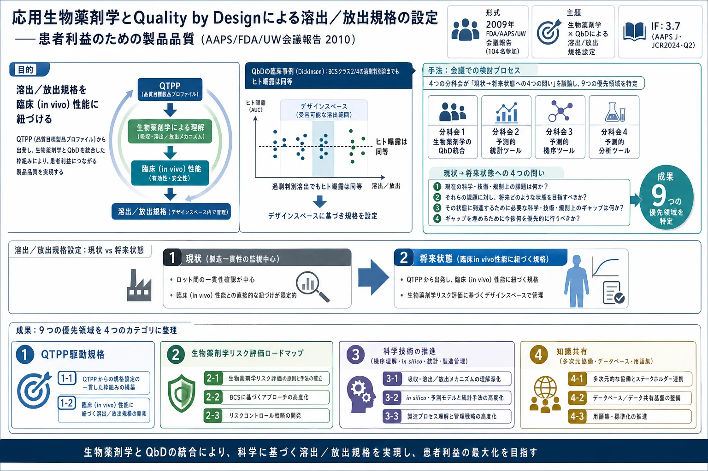

応用生物薬剤学とQuality by Designによる溶出／放出規格の設定——患者利益のための製品品質（AAPS/FDA/UW会議報告 2010）

<!-- Selen A, Cruañes MT, Müllertz A, Dickinson PA, Cook JA, Polli JE, Kesisoglou F, Crison J, Johnson KC, Muirhead GT, Schofield T, Tsong Y. Meeting Report: Applied Biopharmaceutics and Quality by Design for Dissolution/Release Specification Setting: Product Quality for Patient Benefit. The AAPS Journal 2010;12(3):465-472. doi:10.1208/s12248-010-9206-0 の全訳密度日本語版。 -->
補足（本サイトでの位置づけ）: 本論文は2009年の FDA/AAPS/ウィスコンシン大学会議の報告で、直前に扱った「患者中心の医薬品品質規格」（AAPS J 2025、n4）の15年前の源流にあたる（両論文とも Timothy Schofield が著者）。生薬・漢方の研究ではないが、当サイトが扱う QbD・品質規格・溶出試験 の考え方の基盤を与える。核心は「溶出/放出規格を、製造の一貫性監視のためだけでなく、患者の臨床（in vivo）性能に紐づけて設定する」という発想で、そのために生物薬剤学（in vitro/in silico/in vivo）と QbD を統合する9つの優先領域を示す。生薬製剤（顆粒・エキス剤）でも「溶出／崩壊」は品質特性であり、当サイトで扱った陳皮顆粒の乾燥工程 QbD 最適化などと地続き。とくに QTPP（品質目標製品プロファイル）から規格を逆算する枠組み、生物薬剤学リスク評価ロードマップ（BCS 分類・機序理解・意思決定ツリー）、ばらつきの認識と統計モデリングの重視は、生薬の品質規格を「臨床的に意味のある形で」設計する際の指針になる。n4 と対で読むと、患者中心規格の思想が2009→2025でどう発展したかが分かる。
書誌情報
- 原題: Meeting Report: Applied Biopharmaceutics and Quality by Design for Dissolution/Release Specification Setting: Product Quality for Patient Benefit
- 和題（本稿）: 応用生物薬剤学と Quality by Design による溶出／放出規格の設定——患者利益のための製品品質
- 著者: Arzu Selen（責任著者・FDA）, Maria T. Cruañes（Merck）, Anette Müllertz（コペンハーゲン大学）, Paul A. Dickinson（AstraZeneca）, Jack A. Cook（Pfizer）, James E. Polli（メリーランド大学）, Filippos Kesisoglou（Merck）, John Crison（BMS）, Kevin C. Johnson（Intellipharm）, Gordon T. Muirhead（GSK）, Timothy Schofield（GSK）, Yi Tsong（FDA）
- 責任著者: A. Selen（Arzu.Selen@fda.hhs.gov）
- 掲載誌: The AAPS Journal 2010; 12(3): 465–472（Meeting Report）
- DOI: 10.1208/s12248-010-9206-0
- 受理経緯: 2010年4月1日受付 / 2010年4月19日受理 / 2010年6月2日オンライン公開
- © 2010 米国薬学者協会（AAPS）
- キーワード: 生物薬剤学／溶出／製品性能／Quality by Design／品質目標製品プロファイル
- 雑誌インパクトファクター: 3.7（The AAPS Journal・JCR2024・Q2。本論文は2010年発表であり当時のIF概念とは無関係。現在のジャーナルIFを参考値として記載）
要旨（Abstract）
2009年6月10〜12日、米国メリーランド州ロックビルで生物薬剤学と Quality by Design（QbD）会議が開催され、患者利益のための製品品質向上のアプローチを議論・特定する場を提供した。講演は、現在の生物薬剤学ツールボックス（in vitro・in silico・前臨床・in vivo・統計的アプローチ）、事例研究、新パラダイムの考察を扱った。全体会議・分科会の議論で現状を評価し、QbD と生物薬剤学をより効果的に統合する将来状態を構想した。分科会は4トピック——生物薬剤学評価の QbD パラダイムへの統合、予測的統計ツール、予測的機序ツール、予測的分析ツール——を議論した。生物薬剤学の統合を進め、製品の溶出/放出許容基準設定へのより基礎に立脚した統合的アプローチを支える 9つの優先領域 を特定した。QbD の科学・リスクベースの精神に沿い、患者ニーズを医薬品開発の焦点に置く広範な分野横断の協働と知識共有環境の醸成を、前進の鍵となる要素として特定した。
導入（Introduction）
Quality by Design（QbD）[1]パラダイムの実装は、品質目標製品プロファイル（QTPP）の臨床・安全性目標を通じて患者ニーズにより良く応えるための、製品開発・製造の新しい知識ベースのアプローチを導入しつつある。これらのアプローチは、工程パラメータ・製品特性と、それらが薬物の生物学的利用能・溶出/放出プロファイルに与える影響のより深い理解を要求する。in vitro 試験を含む生物薬剤学ツールは、意図した臨床 in vivo 性能に沿った医薬品開発を導き支援できる。自然な拡張は、最終製品の望ましい生物学的性能に紐づく溶出/放出規格の設定である。
本報告は、2009年6月10〜12日にロックビルで開催された会議の講演の簡潔な記述と、分科会の議論・推奨をまとめる。FDA とウィスコンシン大学薬学部エクステンションサービスが共催し、AAPS の協力で組織された。参加者104名。会議目的は、(1) 開発初期から商用規模製造・ライフサイクル管理までの各段階で用いる溶出/薬物放出法の現状を確立し、QbD パラダイムの文脈で生物薬剤学の現状をレビューすること、(2) 溶出/放出規格設定のための予測的・臨床的に意味のある in vitro 法について、QbD 原則に沿った生物薬剤学への「共通アプローチ（ロードマップ）」を得るために必要なツール・実現要因を特定すること、であった。
講演（The Presentations）
キーノート（Helen Winkle）: 「CMC（化学・製造・管理）審査の将来は QbD と関連ツールであり、企業がより良い品質を製品に作り込むことを可能にする」。生物薬剤学と QbD の統合による規制プロセス改善、進化する科学技術の活用と継続的改善の必要性を論じた。Arzu Selen は、製品の重要品質特性（CQA）と意図した in vivo 製品性能を結ぶ予測的手法・溶出試験基準の価値を強調した。
全体会議1:
- Anette Müllertz — 薬物放出・吸収を特性評価する生物学的関連（biorelevant）in vitro 法。各種溶出法、in vitro 脂肪分解、放出/脂肪分解と腸細胞培養（Caco-2 等）での輸送研究の組合せ。生物学的関連媒体の組成選択はシミュレートしたい条件（例：摂食状態の放出予測にはモノグリセリド・遊離脂肪酸を含む媒体）に基づくべき。
- Maria Cruañes — 溶出を制御しうる原薬（API）特性の評価、in vivo 吸収を高める重要賦形剤/管理の同定のための、開発初期の新規小型化 in vitro 法。開発科学者が後続段階に必要な事前知識を捕捉・文書化。
- Tahseen Mirza — 低溶解度化合物の製剤開発における in vitro/動物モデル・リスク評価の教訓。in vitro/前臨床結果を臨床ヒト試験に直接外挿することへの注意を喚起。
全体会議2:
- Paul Dickinson — in vivo リスクの深い理解と適切な溶出条件の開発が薬物曝露を保証する規格につながる。BCS クラス2・4 の即放性製品の事例で、溶出法が「過剰判別（over-discriminating）」だったがヒト曝露は同等。QbD 臨床研究が、臨床性能を保証する溶出規格を伴う実行可能な製剤のデザインスペースを導いた[3]。
- Gordon Muirhead — 臨床的関連 CQA が重要工程パラメータ（CPP）に直接/間接に結びつき、CPP はリアルタイム試験や PAT で監視できる。CPP と CQA の多次元関係に基づく許容基準がデザインスペース内の操作基準維持を保証。
- Jack Cook — 製品性能と in vivo データの連結、判別的溶出試験の重要性。IVIVC 確立の便益、データ蓄積で IVIVC が進化し開発を導くこと、確立した IVIVC モデルが規制上の必要を超えて市場製品に大きな価値を提供すること。
- Arzu Selen — 文献から作った2例で、よく特性評価された CQA と堅牢・予測的な手法に基づき、生物薬剤学が工程・製品・望ましい in vivo 性能を結んで患者ニーズを満たす様子を例示。
全体会議3:
- Jennifer Dressman — 現行の生物薬剤学ツールをレビューし、QbD パラメータと in vivo 性能を結ぶ利点を強調。生物学的関連法・in silico モデリングの精緻化と製剤感受性の理解が必要で、in vitro/in silico/in vivo の合理的使用が開発プログラムを合理化。
- Christos Reppas — in vitro 法が食事効果・薬物吸収を極端条件・特殊集団で十分予測できるか。生物学的関連媒体は溶解性問題の同定・適切な製剤戦略（食事効果への頑健性試験含む）に有用。GI 管での性能評価に高 pH・移送モデルの価値を強調。
「革新的・先進的・借用ツール：長所と短所」:
- Filippos Kesisoglou — 経口吸収モデリングツールで製剤決定を促進（生物学的関連溶出・API 特性/規格の応用例）。in silico ツールは進化途上だが、モデリングと in vitro 法の結合が生物薬剤学領域の QbD を促進する強力なツール。
- Stefaan Rossenu — 長時間作用型注射用ナノ懸濁剤の溶出規格設定への IVIVC モデルの開発・適用。
- Patrick Marroum — 規制目的は市販バッチが臨床試験バッチと同じ安全性・有効性プロファイルをもち、バッチ間ばらつきの低減で患者リスクを最小化すること。「重要製造変数と生物学的利用能への影響の関係の理解が、将来の製造変更を助け、規制負担を軽減しうる」。
全体会議4:
- Jobst Limberg — IVIVC の重要性、とくに徐放性製品で製品ラベルに放出速度情報を提供する価値。PAT ツールと多変量解析（主成分分析で許容/不許容バッチのクラスタを構築）を用いる新規規格設定アプローチ。
- Chikako Yomota — 日本の経口製剤の生物学的同等性ガイドラインと QbD の規制的視点。デザインスペース開発に溶出試験を使うなら、生物学的利用能の差を検出できる判別的条件を選ぶべき。製剤デザインスペースの例を示し、多変量関係を製品の製剤デザインスペースと同定。
- Alan Royce — 製薬業界の視点。QTPP を製品品質確保のための生物薬剤学的性質を含む CQA の集合と記述し、通常は製品規格（剤形・含量・薬物放出：溶出・崩壊時間）に類似し、新知識で進化する。QbD が生物薬剤学・CQA の多変量理解を提供し、QbD 開発プロセスを強化する生物薬剤学ツールの改善につながる。
- Christine Moore — 米国規制の視点。ICH Q8 R1 に沿った溶出規格の QbD アプローチ例。QbD は患者・製品・工程の明確なリンクで医薬品開発・製造の根本的転換をもたらし、より科学・リスクベースの規制監督を実現。「大きな進展があったが科学的・組織的・規制的課題は残る」。
分科会（The Breakout Sessions）
4つの司会チームが4トピック（生物薬剤学評価の QbD 統合、予測的統計ツール、予測的機序ツール、予測的分析ツール）の分科会を主導。現状から望ましい将来状態（原著 Fig. 1）へ移るために必要なツール・アプローチについて4つの問いに答える形で議論：
- 現在のツール・実現要因は何か？
- 望ましいツール・実現要因は何か？
- より良いツールをどう開発し、努力をどう統合するか？
- 既存・潜在的な機会は何か？
参加者の回答を収集・表示し、投票で推奨に優先順位を付与。生物薬剤学を QbD パラダイムに効果的に統合する潜在力が最も高い9つの優先領域を特定（原著 Fig. 2 で相互関係を図示）。原著 Table I はこれを4カテゴリに整理。
原著 Table I：4つの広いカテゴリと特定された9優先領域
| カテゴリ | 優先領域 | 内容 |
|---|---|---|
| QTPP 駆動規格 | QTPP 駆動規格 | 品質目標製品プロファイルで定義される、医薬品の意図した目的・患者集団のニーズに整合する性能基準を満たすよう規格を設定 |
| 生物薬剤学リスク評価ロードマップ | 生物薬剤学リスク評価ロードマップ | 下記領域の知識を活用してリスクを評価し、製品が事前規定基準を満たすよう製品開発・製造・管理戦略を導くワークストリーム |
| 科学技術の推進・活用 | 機序理解 | in vivo 薬物放出・吸収の理解を得る実験、in vitro 放出モデルのより良い理解で補完 |
| in silico ツール | 研究・仮説検証の支援、機序知識の捕捉、機序研究から生じる仮説を探る客観的ツール | |
| 統計手法 | 製品設計・開発・製造でのリスクモデル構築において、ばらつき・不確実性を理解し組み込むための、より厳密な統計適用 | |
| 製造・管理 | 現代的製薬単位操作・分析法に基づき、望ましい製品性能に紐づく剤形の一貫性を確保 | |
| 知識共有・協働 | 多次元協働 | 業界・学界・規制当局にわたる学際的相互作用 |
| データベース | 知識・ツールへのアクセスを捕捉し、全技術領域にわたるリンクを促進 | |
| 用語集 | 多様なスキル分野にわたる communication を促進する共通言語 |
知識共有と協働（Knowledge Sharing and Collaborations）
多次元協働
製薬プロセスを患者アウトカムに結ぶ鍵は全ステークホルダーの協働。製造問題から個々の患者アウトカムまで全因子を理解する十分な知識をもつ単一組織はないと合意。ステークホルダーは複数次元から——製薬開発プロセス（業界・世界の規制当局・学界）、および製薬科学者が学べる非製薬分野（食品業界の連続生産など、よく特性評価・開発された自動化技術）——から成る。製剤・分析・臨床・製薬科学者、工程エンジニア、プログラマー、規制専門家、統計家、生物学者、化学者を含む。
推奨: 多次元協働を促進する複数の仕組みを開発（主に必要な全分野の機能専門家からなる規制/業界/学界フォーカスグループの結成）。会議（とくに AAPS）、協働への年間賞、協働基準に基づく研究助成などでさらに促進。
データベース
「データベース」と概念的に呼ばれる必要は、典型的なデータベースより大きな知識・ツール・教訓の資源を包含し、複数の情報源・領域にわたる知識・情報共有を接続・促進するプラットフォームとして構想される。製薬業界は膨大なデータを生成し、学術機関も重要な生物薬剤学研究を行うが、これらは断片化され異なるシステムに存在し、洞察を生むパターン・トレンドの採掘が困難。各科学者は自機関がアクセスできる小部分に限られ、各機関が類似の問いに独自データを生成する必要があり、時間・費用の膨大なコストとなる。
構造化資源（製剤・溶出データ/法・薬物動態特性・安定性・他の製品特性）でありつつ、データ可視化・採掘やデータ解析ツール（薬物動態・統計・シミュレーション）へのアクセスを可能にする「ツール的」対話機能も期待。成功・失敗両プロジェクトの過去データを含み、異なるデータ解析アプローチ・新仮説検証を促進。
推奨: 「賢い」データベースの典型的成果を超え、複数データ源・プログラムを柔軟に扱う接続プラットフォームとして機能。知的財産の懸念の大半は薬理学的性質であり生物薬剤学的特性でないため、知財を保護しつつ有用データを提供するデータベース設計は可能。
用語集
生物薬剤学用語集を推奨。複数分野の統合・多次元協働に合意された用語が必要。全員がアクセスできる用語集が明確さ・communication を促進。
推奨: 製薬業界の用語のオンライン用語集としてウェブサイトを開発。製薬コミュニティ会員が内容を維持・監視し、編集委員会が専門家を同定して用語定義を支援、独立審査に付す。多様な情報源の情報を照合し医薬品開発・承認を促進する権威ある命名の焦点となる。
科学技術の推進・活用（Advancing and Leveraging Science and Technology）
機序理解（Mechanistic Understanding）
in vitro 薬物放出モデルの豊富な研究と、公定書・非公定書の装置・媒体の多数の選択肢[4]がある。すべてが in vivo 放出を予測（相関）するわけではなく、予測/相関の潜在能力をもつものも十分活用されていない。in vitro 法の理解を改善し、方法選択の調和された根拠を提供するガイダンス/意思決定ツリーに集約する必要がある。in vitro モデルのさらなる開発・活用は、薬物吸収中の in vivo イベントのより基礎的な理解に基づいてのみ可能。
当面の焦点2領域: (1) 剤形から in vivo でどのように・どこで薬物が放出されるか、(2) 製剤賦形剤が薬物放出に果たす役割。
推奨（機序理解の段階的手順）:
- モデル化合物/剤形での in vivo 研究を優先 — 放出/溶出の様式・速度が異なる製剤での吸収プロファイルを解明する臨床研究、GI 管での剤形挙動のイメージング、摂食/絶食・疾患状態・乳児/高齢者などでのヒト GI 液の特性評価。
- モデル分子/剤形で生成した in vivo データ・生理知識で、in vivo 放出特性をより良く模倣する in vitro（in silico）モデルの開発・検証を導く（媒体・媒体量・シンク・流体力学の選択）。薬物-賦形剤相互作用を探る新規検出技術も。
- 最終目標として、得られた in vitro モデルを特定の開発目的に適した調和カテゴリに分類（分類基準：(a) 薬物分子・用量の特性〈溶解度・透過性・pKa〉、(b) 意図/実際の放出機序、(c) 剤形の種類と賦形剤の機能的役割）。
機序研究の知識は「生物薬剤学リスク評価ロードマップ」に統合されるべき。提案する機序研究の基礎的性質は、薬物動態・生物薬剤学・化学・分析機器・イメージング・生理学などの分野を結ぶ学際協働を要する。
in silico ツール
in vitro 観察を臨床製剤性能に結ぶ in silico ツールの活用は開発プロセス全体に及ぶべき。モデリング・シミュレーション能力の向上が化合物の in vitro/in vivo 挙動の知識活用を促進し、より合理的な臨床研究設計と製品特性（API 粒径・製剤賦形剤・製造工程）や in vitro 放出法（溶出）の関連規格につながる。アウトカムだけでなく、その発生確率・予測に伴う誤差も予測する in silico モデルの開発が重要。吸収モデリングツールは存在するが、公開領域での予測精度の広範な評価が不足。現行モデルは主に従来の即放性・遅延・徐放性固形製剤の吸収シミュレーションに焦点だが、難溶性化合物が増加（新規化学物質の最大90%が BCS II/IV と推定）[5]しており、難溶性化合物・新規剤形（アモルファス系・ナノ懸濁剤・液充填カプセル）のモデリングへのソフトウェア適用の広範な評価が望ましい。
推奨: in silico ツールの積極的実装・継続的改善で、生物薬剤学的性質を中心としたモデリング・シミュレーションを製剤・開発プロセスの不可欠な部分にし、初期開発から登録まで QbD を促進。組織横断的な探索（モデル化合物を上記データベースと連携させて新規/従来剤形の PK/PD・放出パターンをモデル化、既存/新規ツールの応用拡大）が最大価値。
統計手法とばらつきの認識
高品質製品開発の鍵は、ばらつきの認識のための厳密な統計適用・統計モデリング。ばらつきの認識は (1) ばらつき・その源・影響の理解、(2) 設計・管理によるばらつきの管理、(3) 意思決定を促進するばらつきの利用、を含む。高ばらつき工程は使用不適な製品を生み、高ばらつきアッセイは真のシグナルを覆い、高ばらつき実験結果は誤結論のリスクを生む。多因子実験計画・多変量解析・統計モデリングがばらつき評価の数学的枠組みを提供し、使いやすいソフトが実務者のリスク低減を支援。不確実性を規格に組み込み患者集団リスクを減らしつつ、製造者リスクへの同等の感受性ももたらすべき。
推奨: (1) 統計コミュニティと協働して問題を定義し効率的な研究パラダイムを設計し不確実性をモデル・意思決定に組み込む、(2) データベースと連携して主要データに不確実性の尺度を付随させる、(3) 製薬科学者に統計的思考（ばらつきの認識・実験計画・アウトカムの統計尺度）を教育、(4) ソフトベンダーを実用的で使いやすい統計ツール開発に関与させる。
現代的製造と管理
溶出試験の一目的は、単一・複数バッチの製造工程の一貫性を経時的に監視すること。しかしこの最終製品試験は、生物薬剤学的性能目標で定義される望ましい品質を製品が満たすことを必ずしも保証しない。個々の投与単位のより大きな管理を提供し、CPP・材料特性のリアルタイム測定に適した近代化された単位操作で品質を製品に作り込める。
推奨: 製薬製造の近代化が、QTPP が示す生物薬剤学的性能を一貫して提供する固形製剤の生産・特性評価を可能にする大きな潜在力をもつ。推奨焦点領域は連続操作とリアルタイム監視・出荷のプロセス分析ツール。
生物薬剤学リスク評価ロードマップ（Biopharmaceutics Risk Assessment Road Map）
生物薬剤学研究は、薬物候補選択・製剤最適化・変更（製剤・製造工程・製造所）の in vivo 性能への影響の解釈の支援など、開発で重要な役割を果たす。in vitro/in vivo/in silico 研究後、データをモデル化して寄与因子を同定し様々な条件でのアウトカムを予測できる。「生物薬剤学リスク評価ロードマップ」は、機序・支持研究の知識を活用し、特定の製品特性（BCS や生物薬剤学的薬物処分分類システムの分類[5]）・主要意思決定点を捕捉して、医薬品の in vivo 性能のリスクを評価する文書。目標は製品が事前規定の患者中心品質基準を満たすこと。
推奨: このワークストリームは意思決定を促進する文書を開発し、必要な実験を同定し、意図した臨床（in vivo）性能に基づく溶出試験（または代替）・規格に至る開発経路を地図化する。文書は：
- 既存知識活用（BCS 分類・領域別吸収等）を重視した最先端の手法。
- 質問ベースの形式・意思決定ツリー（薬物が特定性質をもつならステップ A か B を検討、A ならステップ C・D が後続オプション）。
- データ・知識の提示形式の提案。
- メソッド開発の意思決定点・根拠の解明（溶出法の red flag の同定、より広範な努力が必要な時の指示、in vivo ランク順結果との整合・判別性などの方法適合性基準）。
- 薬物生物学的利用能（速度・曝露）と in vitro 溶出/放出プロファイルに関する品質リスク評価（QRA）の実施指針。API・製品・工程のリスクプロファイリングが成功する開発経路定義の基礎。
- 生物薬剤学ツールの適切な選択・適用が、品質リスク評価（ICH Q9）で同定された特定失敗モードの発生確率のより良い推定を促進（例：in silico モデリングで API 粒径の影響を予測）。
QTPP 駆動の規格（溶出/放出許容基準）
ワークショップの主目的は、工程・製品知識を in vivo 製品性能と結んで製品品質を確保し、最も情報量が多く重要な境界を製品規格として確立するために、生物薬剤学と QbD 原則を統合する最善の方法を探ること。QTPP は製品開発を初めから導く事前規定目標を提示。例：望ましい in vivo 薬物放出プロファイルが剤形設計（製剤組成・製造工程）を導き、治療効果を達成する。QTPP を念頭に導いた溶出/放出許容基準は、製品特性と望ましい in vivo 性能の関係を確保する。
分科会は、製品の健全な機序理解（CPP・CQA）・意図した用途・考慮すべき固有特性（剤形・投与経路・患者集団）に基づき、製品規格を in vivo 性能に結ぶことを強調。「個別化」製品開発は前進の方向とすべきでないと提起されたが、剤形の柔軟性、治療領域/患者集団（年齢層含む）への調整、意図した用途に結びつく規格は大いに望ましい。QTPP と製品成分・製造工程パラメータのリンクを反映する製品規格が製薬品質（望ましい臨床特性の達成失敗の許容できる低リスク）を確保する。
推奨: この優先領域のリーダーがコアグループを作り、製薬業界・他分野の規格設定グループとの協働を探る。コアグループが起こりうるシナリオを探索・拡大し、QbD パラダイムでの規格設定の影響を例示する事例を開発。
結論（Conclusion）
参加者が、患者利益のための QbD パラダイムへの生物薬剤学の効果的統合を進める潜在力が最も高い9優先領域を開発し、定義された目的を達成した。これら9領域の重要性は、QbD 原則を日常の製品開発実務に実装する推奨がなされる中でさらに認識された。前進の鍵となる要素が特定され、規制・業界・学界のリーダーの将来の関与が、患者ニーズを医薬品開発の焦点に置く QbD 実務の実装ガイドライン開発・確立に必要な入力を提供する。
謝辞・免責
Leanne Cusumano Roque（エグゼクティブコーチ）、ウィスコンシン大学薬学部エクステンションサービス、AAPS 会議運営スタッフ、2009年会議参加者に謝辞。免責: 本記事の見解は著者のもので、各社/機関や FDA の公式方針を必ずしも反映せず、FDA の公式承認を意図・推論すべきでない。
参考文献
- Guidance for Industry Q8(R2) Pharmaceutical Development, 2009 (ICH Q8(R2)).
- Gray VA. Meeting report: University of Wisconsin/AAPS/FDA Workshop Applied Biopharmaceutics and QbD for Dissolution/Release Specification Setting. Dissolution Technologies. 2009;16(4):35-9.
- Dickinson PA, Lee WW, Stott PW, et al. Clinical relevance of dissolution testing in quality by design. AAPS J. 2008;10(2):380-90.
- Müllertz A. Biorelevant dissolution media, biotechnology. Pharmaceutical aspects. AAPS; 2007. p. 151-77.
- Benet LZ, Wu CY. Using a biopharmaceutics drug disposition classification system to predict bioavailability and elimination characteristics of new molecular entities. NJDMDG; 2006.